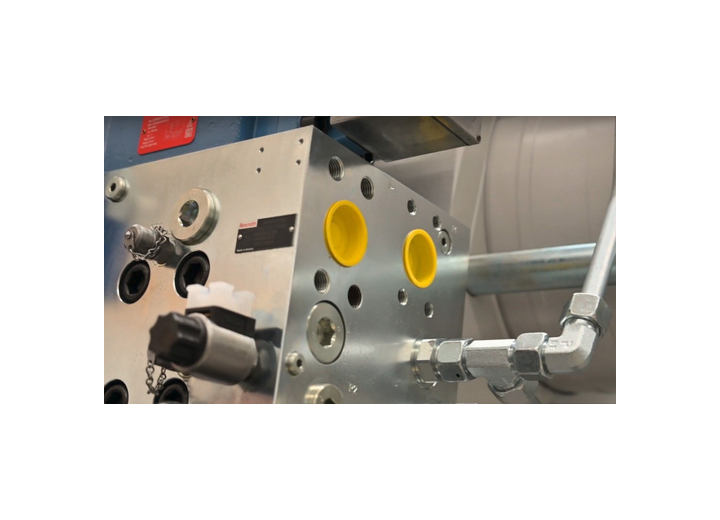

Sistemas integrados
Sistemas integrados - soluciones personalizadas. Producto de Hidráulica industrial. KDL ayuda a validar compatibilidad, disponibilidad y alternativas para mantenimiento industrial.

Datos para cotizar
- Presión y caudal
- Diámetro / carrera
- Tipo de válvula
- Conexiones
- Fluido y temperatura
Aplicaciones
- Prensas
- Inyección
- Maquinaria pesada
Fallas comunes
- Pérdida de presión
- Fuga externa o interna
- Sobrecalentamiento
Documentacion
Solicita la ficha técnica correspondiente a la marca y modelo exactos.
Preguntas frecuentes sobre Sistemas integrados
¿Qué información necesita KDL para cotizar Sistemas integrados?
Comparte presión y caudal, diámetro / carrera, tipo de válvula, conexiones, fluido y temperatura. Si no tienes todos los datos, una foto de la placa o de la pieza ayuda a comenzar la identificación.
¿Cómo se valida una alternativa compatible?
Se revisan especificaciones críticas, montaje, conexiones, dimensiones, condiciones de trabajo y aplicación. La apariencia no confirma compatibilidad.
¿Qué hago si presenta pérdida de presión?
Documenta el síntoma, número de parte, condiciones de operación y fotografías seguras de la placa y el montaje para orientar la revisión.
¿Puedo solicitar una ficha técnica?
Sí. Indica la marca y el modelo exactos para localizar la ficha técnica oficial correspondiente.